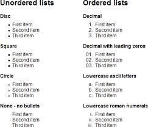

Listas
Se pueden representar elementos en forma de lista dentro de nuestros documentos de forma sencilla y con versatilidad. Estas listas podran incluir cualquiera de los elementos html e incluso podemos definir listas anidadas, es decir listas dentro de listas. HTML nos permite crear tres tipos de listas.
- Listas no numeradas
- Listas numeradas
- Listas de definicion
- Listas no numeradas
- Listas numeradas
- Listas de definicion
Con este tipo de lista podemos especificar una serie de elementos sin un tipo de orden predeterminado, precedidos por una marca o viñeta que nostros mismos podemos definir.

Con este tipo de lista se puede especificar una serie de elementos numerados según el lugar que ocupaan en la lista.

Estas listas nos van a servir para especificar una serie de terminos y sus definiciones correspondientes.

Referencias: Muñoz, V. J. E. (2012). HTML, presente y futuro de la web. Vicente Javier Eslava Muñoz. (Pag.32,33). https://books.google.com.co/books?hl=es&lr=&id=lT14AQAAQBAJ&oi=fnd&pg=PA8&dq=listas+y+enlaces+html&ots=pyNyIfTmZ1&sig=ounCJpX0mlbO8fRfwcR8uQ51WPI&redir_esc=y#v=onepage&q=listas%20y%20enlaces%20html&f=false